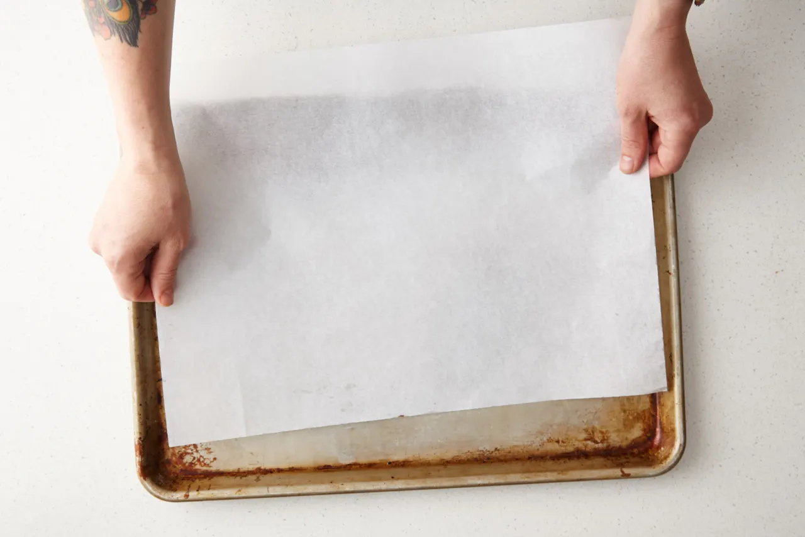
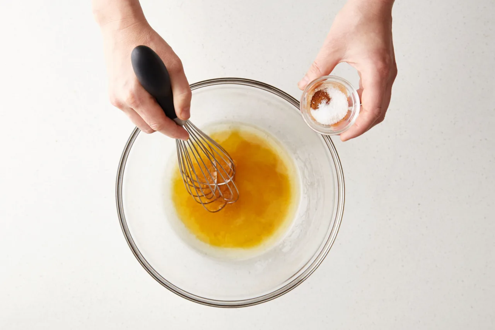
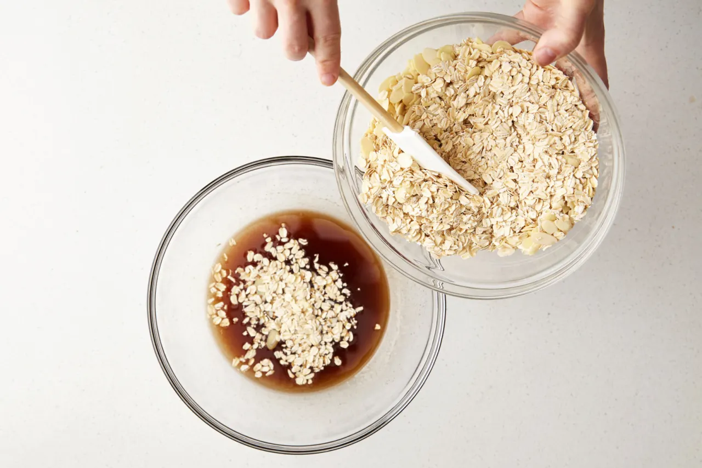
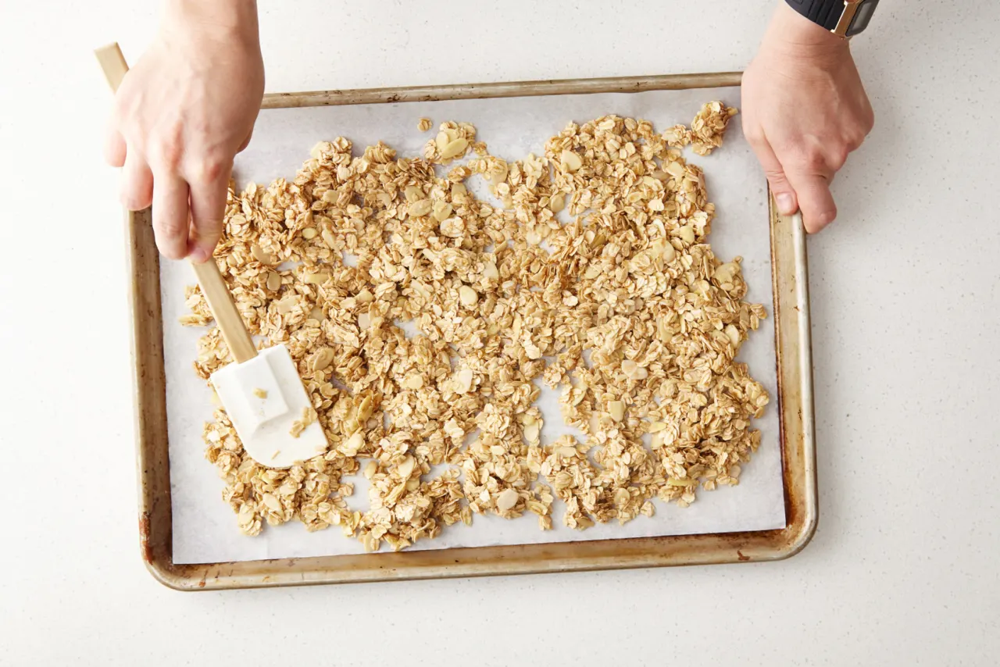
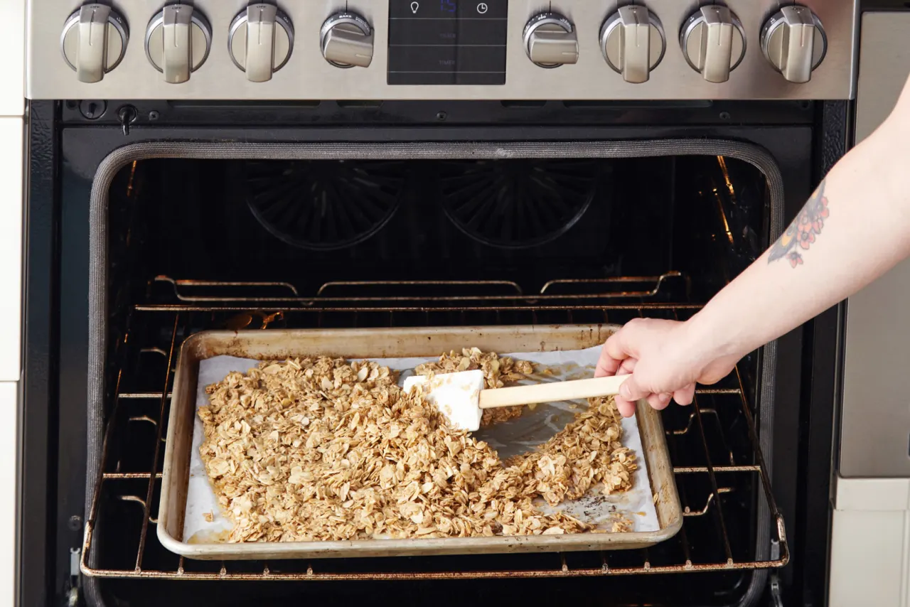
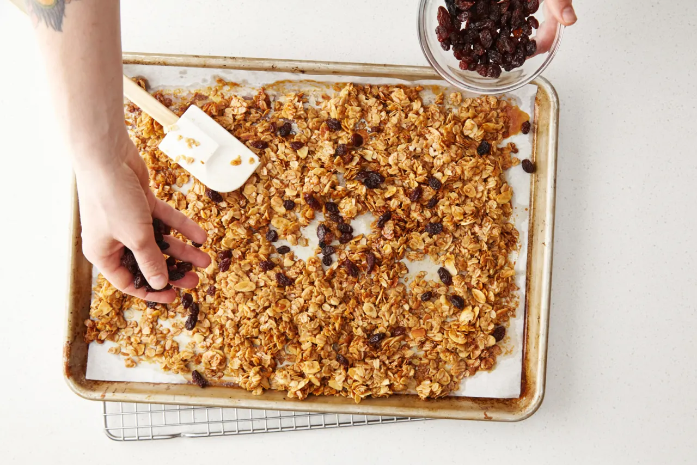
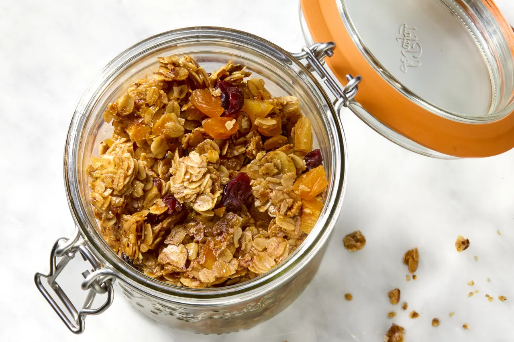
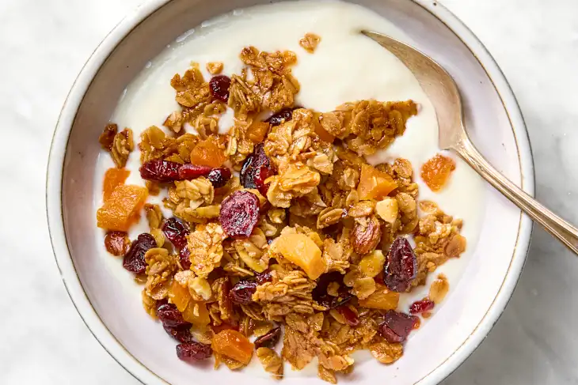

Basic (but very good) granola requires just a handful of ingredients: rolled oats, a sweetener, some cooking oil, and maybe nuts or dried fruit. Try this recipe straight up or tweak it slightly using different sweeteners, seasonings, or swapping the nuts or fruit for your favorite. With this simple easy granola, the possibilities are almost endless.
Prep Time: 15 minutes Bake Time: 20-25 minutes Makes 5 cups Stores: up to a month
Arrange a rack in the middle of the oven and heat the oven to 300°F. Line a rimmed baking sheet with parchment paper.
Place all the following: oil, honey or maple syrup, cinnamon, and salt in a large bowl and whisk to combine.
Go ahead and measure three cups old-fashioned rolled oats and one cup of sliced almonds right into the oil mixture — don’t worry if you add a little more oats or almonds — granola is very forgiving. Stir to coat well.
Transfer the mixture to the prepared baking sheet and spread into an even layer. If the granola is clumpy, use a spatula to press it into the pan.
Bake, stirring halfway through, for about 20 minutes total. The granola is ready when golden-brown and the almonds have toasted — it will still feel wet coming out of the oven but will dry as it cools.
Place the baking sheet on a wire rack and sprinkle on raisins or other dried, chopped fruit. If you want clumps of granola, press and tamp down the granola before it cools, which will help it stick together. Cool completely before storing.
Transfer the cooled granola to an airtight container for long-term storage at room temperature.
Enjoy as is or on yougurt!
Recipe and Imagery sourced from the kitchn